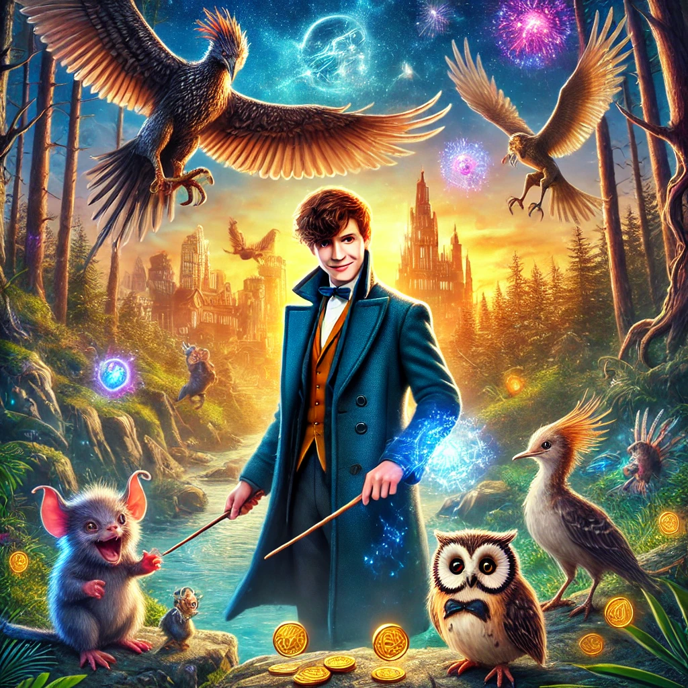

신비한 동물사전
목차
작가
J.k. 롤링
출판일
2017년 7월 24일
감상평에 대한 AI그림
마법사 세계관 속에서 신비한 동물들이 생동감 넘치게 펼쳐지는 모험이 매력적인 작품이었다.
뉴트 스캐맨더의 따뜻한 시선으로 바라본 마법 생물들이 신비로우면서도 사랑스러웠다.
판타지와 스릴이 적절히 어우러져 더욱 작품 속에 빠져들 수 있었다.

감상평에 대한 AI평가
이 감상평은 다음의 감정을 중심으로 구성되어 있습니다.
✨ 신비로움과 생동감: 마법사 세계관 속에서 펼쳐지는 신비한 동물들의 모험이 생동감 있게 그려지며, 환상적인 분위기를 선사합니다.
✨ 따뜻함과 애정: 뉴트 스캐맨더의 따뜻한 시선을 통해 마법 생물들의 사랑스러운 면모가 강조되며, 그들과의 유대감이 더욱 돋보입니다.
✨ 몰입감과 긴장감: 판타지적 요소와 스릴이 조화롭게 어우러져 독자로 하여금 작품 속에 깊이 빠져들게 합니다.
이 감상평은 신비한 마법 세계의 매력과 감동, 그리고 모험의 짜릿함을 고스란히 전해주는 인상적인 글입니다.